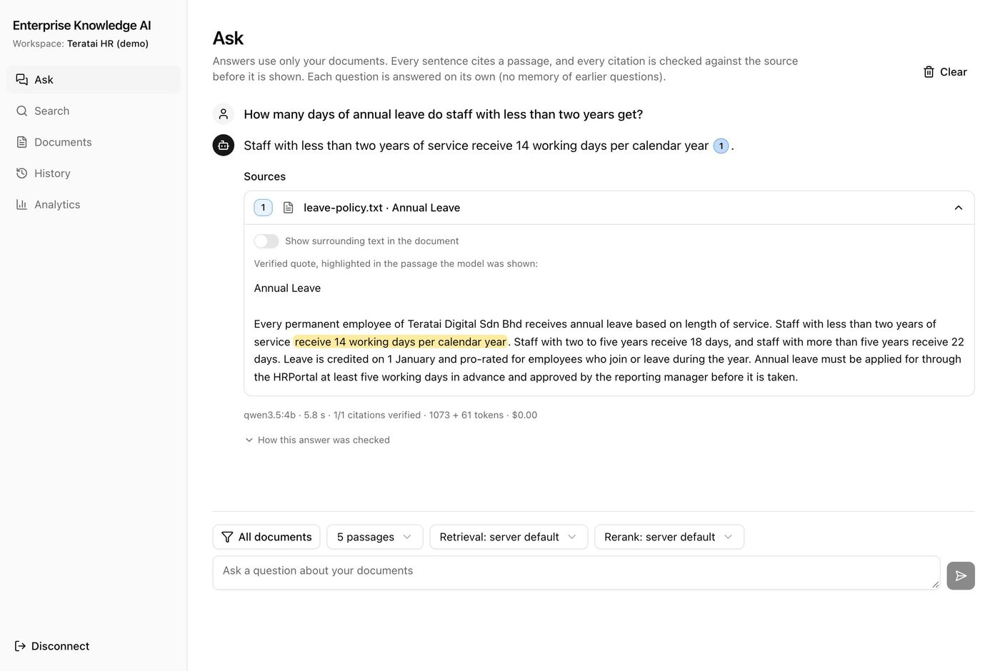

Enterprise Knowledge AI
Hybrid-search question answering over company documents
Ask a question about company documents and get an answer that quotes the exact sentence it came from, or an honest "not enough evidence". Documents are split and indexed for both keyword and semantic search, a cross-encoder reranks the results, a local LLM writes the answer, and two checks reject any sentence the sources don't support. Built, tested and documented phase by phase, with no paid AI APIs.

- Role
- Solo project
- Built with
- Python, FastAPI, PyTorch, Ollama (Qwen 3.5), ChromaDB, SQLite FTS5, Next.js, TypeScript, Docker, GitHub Actions
- 0.96
- search ranking (MRR), up from 0.544
- 1.00
- MRR on 38 unseen questions2
- 9/10
- unanswerable questions refused2
- 505
- automated tests in CI5
How an answer is made
- 01Documents uploaded
- 02Split and indexed: keyword + semantic
- 03Hybrid search, then reranked
- 04Local LLM drafts the answer
- 05Every quote checked in its source
- 06NLI check passes, or it refuses